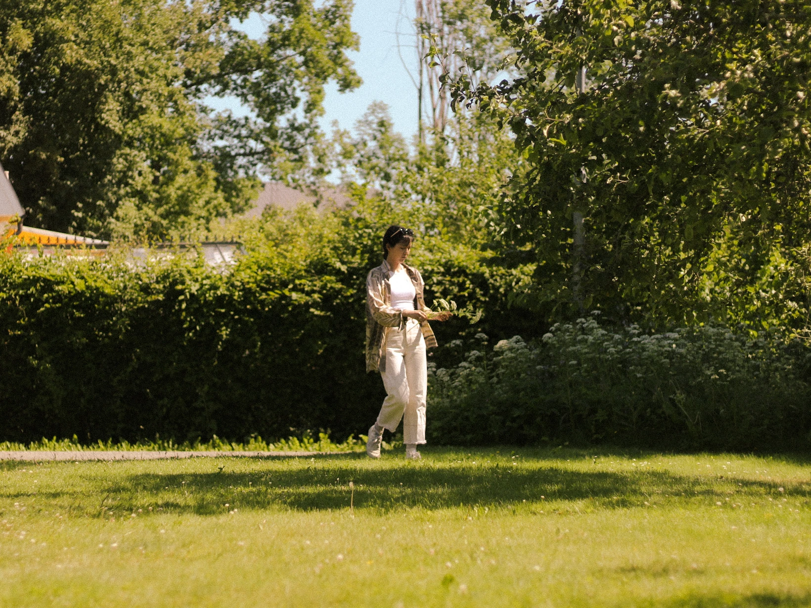

Under the Sun
An exploration of how the Sun became a silent participant in my photography.
I kept looking back at my memories these past weeks. As I combed through old folders, looking at
portraits of friends lingering around uni, or standing by the beach on a summer day, a distinct through-line
emerged. Whether I was capturing those quiet, intimate moments of the people I cared about, or looking at stark
silhouettes with light blazing directly behind them, the sun was always my silent participant.
It wasn't just a setting or a utility for exposure, it was the warmth on our skin, the light that carved out their
features, and occasionally, it was the blinding force that reduced their identities to shapes against horizons.
I shot these moments on many cameras, but always returning to my 50mm prime lenses, especially for the portaits.
Because that focal length closely mimics human eyesight, looking back at these images, feels less like viewing a record,
and more like stepping back into my own body from back then. Standing there, looking at my friends as they were,
caught together under the sun.

An afternoon under a Canopy
The sunlight in Mumbai has a specific weight to it, especially during the heavy heat of the day. I remember the warmth in the air and the slight, welcoming breeze moving the palm leaves above us. She stood there wearing a beautiful maroon saree, framed with the greens of the palm behind her. Rather than retreating into the shade, she let the midday sun filter through the canopy, allowing the trees to shape the sunlight falling on her.


The sun, breaking through the palm canopy acted like a stencil. Casting linear shadows that fell across her face, her neck, and the folds of her saree. The light catching the gold details of her blouse, her earrings shimmering, constrasting with the deep shadows of sunlight resting on her skin.
The shifting palm shadows offered a delicate, quiet intimacy to these sun-drenched portraits. As the breeze moved, the light danced across her features, with me capturing this serene moment, of a friend standing still in the sun.
It is fascinating how the sunlight acted almost like a masking layer. In one moment, it highlighted the curve of her jawline and the texture of her maroon saree, and in the next, as the breeze shifted, it drew my eye to the gold embroidery of her blouse and the glistening of her watch. Every time the wind moved the canopy, the light rearranged itself, painting a new texture onto the scene. Forcing me to wait for the exact second when the shadows perfectly aligned with her expression. The sun wasn't just lighting the portrait, it was actively directing it.

Golden Hours by the Beach
When I was at the beach, my relationship with the sun changed. Most of these beach photographs were taken during the late afternoon or at sunset, right in the thick of golden hour. Earlier, the sunlight painted an entirely new texture onto the scene. At the beach, however, the sun moved from illuminating my friends to overpowering the lens, turning from a spotlight into a blinding backdrop and creating a visual erasure.


Shooting directly into that warm light stripped away all identity markers, the backlight almost completely removed facial features and clothing details. Instead, it reduced the people in front of my camera to their pure form. The sunlight created these incredibly recognizable figures of my friends, but entirely in it's shadow. Yet, the emotional core of these images is that this absence of detail highlights a different kind of intimacy. Even when reduced to pure shadowy figures, their specific human behaviors made them instantly recognizable to me. The sun erased their features but amplified their essence, proving that I didn't just recognize my friends based on how they look, but by the ways they occupied physical spaces around me.


In one of the frames from that evening at Suruchi Beach, the visual erasure reached its peak. I framed two of my friends against a vibrant gradient of the evening sky, standing among a silhouetted treeline with the sun dipped just out of sight, leaving behind only the warmth of the golden hour. In that moment I realized that my practice wasn't about documenting the exact, detailed features, but simply, forever freezing those memories of the people I cared about.

The Morning of Midsommar
Moving away from the soft golden sunsets and the heavy afternoon light, these frames were captured in the bright light of a summer morning. Taken during the morning festivities of my first Midsummer in Sweden, these images at their core, are a celebration of the sun itself. The sun that morning showcased the warmth of the Swedish summer, a feeling I had missed after the long harsh winter. The sun wasn't just lighting the scene, it was the very reason for the festivities and my presence there.

Unlike the intricate shadows cast by the palm leaves or the blinding backlight of the golden hour, the morning sun here was clear. It acted as a spotlight, highlighting the vivid, saturated greens of the Swedish summer, and the quiet joy of my friend as she collected flowers from the bushes and framed herself under the Maypole.

At the beach, the sun was a blinding force, overpowering the lens and washing away the details of my friends. But here, the sun performed a quiet reversal. Instead of erasing us into the bright sky, it projected our silhouettes directly onto the earth, embedding both me and my friend into the living landscape of its tradition, alongside the shadow of the Maypole.